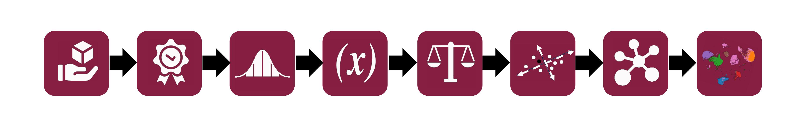

Orthologous marker gene tutorial
Learning how to use the OMG method to classify cell type cluster in your scRNA-seq data in plants
1. Install R and RStudio
- Visit R for Windows and download the .exe file.
- Run the installer and follow prompts to complete setup.
- Visit R for macOS, choose the correct version (Apple Silicon or Intel).
- Download the .pkg file and install by following prompts.
- Open terminal, update packages, and install R:
Install R:
Windows:
MacOS:
Linux (Ubuntu):
sudo apt update
sudo apt install r-base r-base-dev -y
Install RStudio
Download and install RStudio from the RStudio download page for your computer (Windows, MacOS, or Linux).
Launch RStudio
Open RStudio after installation, and start coding in R.
Tutorial video

2. Essential R Code
- Loading data: CSV, TSV, Excel, RDS, RData
- Inspecting data:
head(),str(),summary() - Manipulating data with dplyr:
filter(),select(), andmutate()to manage rows, columns, and new variables - Summarizing data:
group_by()andsummarise()to calculate grouped stats - Visualization with ggplot2
- Statistical test
- Exporting PDF file with:
pdf()anddev.off()
Tutorial video

3. scRNA-seq data processing
- Convert the count matrix (gene x cell) to a Seurat object
- Filter out the low-quality cells
- Normalize the data
- Find highly variable genes
- Scale the data
- Reduce data dimensions using PCA
- Cluster cells by applying the graph-based method
- Visualize cluster cells using UMAP
Tutorial video

4. Marker genes identification
- Load the libraries
library(Seurat)
library(tidyverse)
ATH_root = readRDS("/Users/tranchau/Documents/GFP_2024/Data/S11_WER_GFP/Seurat_Obj_WER_wlabels.rds")
ATH_root_marker <- FindAllMarkers(ATH_root, only.pos = TRUE, min.pct = 0.5, logfc.threshold = 0.5) %>%
group_by(cluster) %>%
arrange(cluster, desc(avg_log2FC))
head(ATH_root_marker)
table(ATH_root_marker$cluster) #summarize number of genes in each cluster
Tutorial video

5. OMG browser guidence
-
This OMG browser enables plant biologists to quickly compare cell types across species and identify cell types in new samples.

6. OMG code guidence
The scripts for the analysis can be found at our GitHub repository.7. Contact me
For more information, please contact me at tnchau@vt.edu.